皮膚疾病
外胚層發育不良
- Ectodermal Dysplasia
- 兩個以上外胚層來源的構造無
- X隱性
- EDA mutation
- NFκB family
- 特徵
- 缺牙、少髮、口乾、無汗
- 完全缺牙 (anodontia) 少見
- 眼睛周圍細小、有色素沉澱的皺紋
- midface hypoplasia
- 指甲可能出現營養不良和易碎

角化異常
Disorder of Keratinization
角質
5、14: 複層口腔上皮都有
1、6、10、16: 角化
4、13、19: 非角化
|名稱|| 成因 |GLA|特徵 |||
|-|-|-|-|-|-|-|-|
| White Sponge Nevus良
(Cannon disease)|| 體顯性 |兩側的頰黏膜，出生時、孩童早期 |
- 口腔黏膜的正常角質化缺陷
- 對稱
- keratin 4 和 keratin 13 表現在上皮的棘狀上皮細胞層
|||||
- hyperparakeratosis, acanthosis
- spinous layer 清澈的細胞質
- 表層細胞核周圍嗜酸

| Hereditary Benign Intraepithelial Dyskeratosis良
(HBID, Witkop’s disease)||體顯性
GENE: 4q35端粒, NLRP1, M77T|口腔與結膜黏膜，孩童|- 類似Cannon disease
- 眼睛: 不透明凝膠狀斑塊
- 舌背: 通常沒有影響
 |
||||||
- hyperparakeratosis, acanthosis
- upper spinous layer 局部角化
- ell-within-a- cell
|Dyskeratosis Congenita
先天性角化不良|| X隱性
GENE: DKC1 |10y ↓ | - 影響 telomerase
- 再生性貧血(aplastic anemia)
- 易有惡性變化
- 皮膚網狀的色素過度沉澱
- 指甲會有明顯的萎縮，甚至消失
- 沒得醫

|||||
- 水泡(bullae) → 白斑 → OPMD
| Hereditary Mucoepithelial Dysplasia良 || 體顯性 | -|
- 少毛脫髮、畏光、視力明顯受損
- 軟硬顎交界明顯火紅班
- 表徵明顯，但通常沒有症狀(asymptomatic)
|||||
- minimal keratinization
- 雜亂無章的成熟
- 無明顯的核、細胞多形性


過度角化
|名稱|| 成因 |GLA|特徵 |||
|-|-|-|-|-|-|-|-|
| Pachyonychia Congenita 先天性厚甲症|| 體顯性 | - |
- keratin 6a, 6b, 16, 17
- 手掌跟腳掌厚繭、指甲底部累積角蛋白
- 多汗
- 走路會有明顯的疼痛

|||||
- 口內良
GENE: keratin 6a (KRT6a) - 如果: Keratin 17 → neonatal teeth, oral white lesion(1/3)
|||||
- hyperkeratosis, acanthosis
- 斑狀顆粒增生(patchy hypergranulosis)
- 毛囊病變，堵塞
- white spongy nevus 比較: 表皮細胞核旁清澈的
 |
|| Papillon-Lefèvre Syndrome ||
GENE: cathepsin C gene |手掌與腳底 | - Cathepsin C: 溶酶體內蛋白酶
- 手掌與腳底的角質化
- 皮膚病灶的治療:維 A 酸類(systemic retinoids)
|||||
- PMN 功能不足 → 嚴重牙周病
- 快速的骨流失 → floating in air
- 瀰漫出血與增生性牙齦炎
色素相關
|名稱|| 成因 |GLA|特徵 |||
|-|-|-|-|-|-|-|-|
| Xeroderma Pigmentosum罕
著色性乾皮病 || 體隱性，UV損傷修復不能 | 下唇和舌尖(SCC 多)，
很早
(口腔: 20y↓ ; 非黑色素皮膚癌: 10y↓) |
- 容易轉成 SCC, BCC
- 沒得醫
|Peutz-Jeghers syndrome || 體顯性，
抑癌
GENE: STK11(LKB1) |兒童早期 | - 雀斑樣(freckle-like): 陽光無關，發生於手部、開口周圍
- 朱紅區、口腔黏膜、舌頭出現 φ 1~4mm 的棕色至藍灰色斑點
- 腸息肉(intestinal polyps，良) → 腸梗塞 → 大比例發展成胃腸道腺癌
- 60y女性，乳癌的機率高達 50%
- 黑色素細胞無明顯增加，但樹突延長


| Incontinentia Pigmenti
(色素失調病，Bloch-Sulzberger syndrome )|| X顯性
GENE: NEMO (NFκB Essential Modulator) | 剛出生| - 先天免疫 gg
- CNS (30%)
- 眼睛 (35%): 斜視(strabismus)、眼球震顫(nystagmus)、白內障(cataracts)、視網膜血管異常、視神經萎縮
- 皮膚: 水皰期 → 疣狀期 → 色素過度沉積階段 → 萎縮和脫色階段
- 口腔: 同 EDA mutation
|||||
水皰期
上皮內裂解，內部充滿嗜酸性球疣狀期
過度角化, acanthosis, papillomatosis色素過度沉積階段
皮下結締組織 melanin-containing macrophage，即黑色素失調(melanin incontinence) |
|
Hair Follicle & Sebaceous glands
|名稱|| 成因 |GLA|特徵 |||
|-|-|-|-|-|-|-|-|
| Cowden Syndrome
(多發性缺陷瘤症候群，Multiple hamartoma syndrome) || GENE: PTEN (腫瘤抑制，20% 測不到) |
- 良性錯構瘤，惡性機率 ↑
- 皮膚
- 小丘疹(<1mm): 耳口鼻毛囊錯構瘤
- 肢端角化症(acral keratosis)、掌趾角化病(palmoplantar keratosis)
- Thyroid gland: 甲狀腺腫(goiter)、thyroid adenoma
- 乳房纖維囊, 乳腺癌risk ↑
- 消化道錯構息肉
- 多發性口腔丘疹: 牙齦、舌背和頰黏膜上皮纖維增生

| Muir-Torre Syndrome || DNA mismatch repair 異常，
GENE: MSH2(90%), MLH1 | 50-60y, AIDS |- 多發性皮膚腫瘤 + 胃腸道惡性腫瘤
- 皮脂腺瘤(Sebaceous adenoma)
 |
||||||
- 皮脂腺囊腫病變(cystic sebaceous lesions): 缺乏表皮連結
- 角化棘皮瘤樣結構的皮脂腺腫瘤(sebaceous tumors with keratoacanthoma-like architecture)
上皮裂解
Acantholytic Disorder
|名稱|| 成因 |GLA|特徵 |||
|-|-|-|-|-|-|-|-|
| Keratosis follicularis (Darier Disease) || 體顯性， ATP2A2 mutation → 細胞內鈣離子幫浦(SERCA2) 異常 → desmosome 異常 | 10-20y |
- 皮膚明顯症狀，口腔輕微
- 多發性紅斑
- keratin 堆積 → 惡臭
- 指甲出現縱向線條、隆起、疼痛的裂口。
- 口腔: 角化黏膜，平頂丘疹(flat topped papules)
 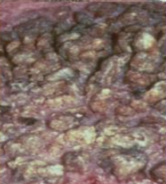 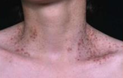
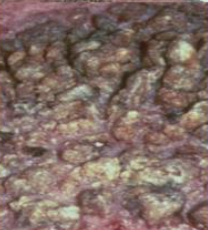 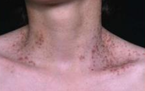 
|||||
- 上皮內裂 (acantholysis)
- Rete ridges 窄長，且呈試管狀。
- 角化不良細胞: corps ronds & grains(類似於穀粒)
- central keratin plug : keratin 堆積

| Warty Dyskeratoma
(疣狀角化不良，
Isolated Darier disease) || - |
- 皮膚: 單發，老人
- 口腔: 角化黏膜，40y↑
- 保守性切除，預後良好，沒有明顯的惡性潛能
- 組織病理類似 Darier disease，除了無 corps ronds, grains 型態
| Pemphigus
天疱瘡 | 自體免疫疾病
|^|vulgaris (PV，常見)|Ab 打 Desmosomes|50y|
- 不結疤，眼球不沾黏
- 口腔病變 first come, last go
- Desmoglein 3: 口內
- Desmoglein 1: 皮膚表層
- 大水泡，薄水泡，破水泡
- Nikolsky sign
|||||
- row of tombstones: 只剩 Basal cell 像 Cleft 突出去
- acantholysis → Tzanck cell (飄落在Celft 中)
- 上皮細胞之間沉積抗體(IgG, IgM)和補體(C3)
- 濃度與臨床症狀嚴重度相關
 |
||Paraneoplastic Pemphigus罕 (PP)
腫瘤誘導性天疱瘡||
- Lymphoma, Chronic lymphocytic leukemia, Castleman disease 患者
- 異常 IL6 → TFH → IL-21 → Plasma cell
- Ab 打 Plakin family Desmoglein 1, 3
- 天疱瘡症狀
- 突發、多發水泡
- 高致死
- 會出現在手掌腳掌
- 嘴唇出血性結痂
- 紅斑(erythema), 瀰漫性不規則潰瘍(diffuse, irregular ulceration)
- 阻塞性細支氣管炎(bronchiolitis o bliterans)
|||||
- Dermis 慢性發炎浸潤
- 上皮內、下都裂
 |
|
- Nikolsky sign
- 水泡邊緣摸一摸,給一個側方力量,水泡會越來越大
皮下裂解
Subepidermal Blistering Disease
泡泡龍寶寶
|名稱|| 成因 |GLA|特徵 |||
|-|-|-|-|-|-|-|-|
|Epidermolysis Bullosa
(大泡性表皮鬆解，泡泡龍寶寶) | 細胞附著蛋白異常 → 異質性遺傳性皮黏膜水皰病變
|^ | Simplex | keratin 5, 14 | 上皮內裂，輕微 |
|^| Junctional |
- laminin-332
- BP180
- α6β4
- hemidesmosome 異常，上皮下裂
- 無 laminin-332: 牙齒與上皮交界異常
- IEE 刺激 Dental papilla 出問題 → odontoblast, ameloblast 分化 ↓
|^| Dystrophic type | collagen 7|
Dominant (體顯性)
- 輕微，通常不危及生命,但是會造成毀容
Generalized Recessive (全身隱性)
- 病發 10~20 年後，皮膚反覆癒合 → 手套畸形(mittenlike deformity)
- 小口症(microstomia)、舌沾黏(ankyloglossia)
- cutaneous SCC risk ↑
|^| Kindler syndrome | hemidesmosomal attachment protein,
kindlin-1 | 基底細胞層下方與透明層的界面處裂解
 |
|| Epidermolysis bullosa acquisita (EBA)||
- 後天，自體免疫
- collagen 7
- 類似 Dystrophic type，結疤
- 粟粒疹(Milia)
- 口腔病灶 (50%)
|||||
- 是溫和、無細胞上皮下囊泡
- 無明顯發炎細胞浸潤
- 切片泡飽和鹽水 → 上皮裂 → 人工水泡
- IgG 在 CT 頂
| Angina Bullosa Hemorrhagica ||創傷、類固醇相關| 軟顎，中年 |
- 不會產生疤痕
- 滿血液的表皮下水泡
類天皰瘡
|名稱|| 成因 |GLA|特徵 |||
|-|-|-|-|-|-|-|-|
| Mucous Membrane Pemphigoid
(黏膜類天皰瘡，
Cicatricial pemphigoid，瘢痕性類天皰瘡)||
- 後天
- 自體免疫: α6, laminin-332
- 慢性，很少自限性 (會越來越嚴重)
- 口內堅固 vesicles/ bullae，α6 型只有口內病灶
- 皮膚結疤，但口內不會 → 無小口症
- 脫屑性牙齦炎(desquamative gingivitis)
- 眼球沾黏
- 陰道黏膜損傷 → 性交疼痛(dyspareunia)

|||||
- 上皮和CT完全分開，之間有 Neutrophil
- IgG, C3 (主)； IgA, IgM
- 抽血 Ag 測不太到
| Bullous Pemphigoid (BP)
大皰性類天疱瘡 ||
- 後天
- 自體免疫: BP180, BP230 (basement membrane)
- 最常見自體免疫性水皰病，緩解期後復發 (時好時壞)
- 皮膚無疤
- 瘙癢(pruritus) → 多發性硬痂大皰 (tense bullae)
|||||
- 上皮和CT完全分開，之間有 eosinophil
- 口內少見 (10-20%)
- 抽血 Ag (+)，但抗體濃度與疾病活動不相關
| Linear IgA Bullous Disease (LAD)
線狀 IgA 大皰性皮膚病 ||
- 後天
- 自體免疫
- 後天
- BP180 (細胞外結構 LAD1)
- 皮膚: string of beads sign (新病灶圍著舊的)
- 口腔: 糜爛、水皰和慢性潰瘍
- 一點結疤
- basement membrane IgA 線性沉積
- Lamina propia 有 Neutrophil 浸潤

| Dermatitis Herpetiformis (DH)
疱疹性皮膚炎||
- 後天
- IgA 結合 trans-glu-ase
GENE: HLA-DQ2 (90%),
HLA-DQ8 (other)
- 麩質敏感性腸病、乳糜瀉皮膚表現
- 時好時壞，如 BP
- 皮膚: 極度瘙癢，對稱
- 口腔病變不常見
|||||
- Dermis papilla 有 Neutrophil → 輪廓的消失, nuclear dust
- Dermis papilla顆粒狀 IgA, C3 沉積物
- CT 發炎細胞浸潤


hemidesmosome
epiligrin = laminin-5 = laminin-332
type XVII collagen = BP180
type VII collagen = BP290


苔蘚樣皮膚炎
Lichenoid and Interface Dermatitis
- Basal cell 退化
|名稱|| 成因 |GLA|特徵 |||
|-|-|-|-|-|-|-|-|
| Lichen Planus (LP)
扁平苔癬 ||壓力、甲狀腺低落？|中年，口腔黏膜單發|
- 慢性，相對常見
- 皮膚: 蕾絲狀白線網格(Wickham striae)丘疹
||||^|
無症狀
網狀型 (Reticular form )
- 最常見
- 可能 post-inflammatory melanosis
- IL-1 刺激 melanocytes 分泌 melanin
- 交錯白線圖案 (Wickham striae)
丘疹型 (Papular type)
- 小且密的過度角化丘疹
斑塊型 (Plaque type)
- 舌背有白斑
- buccal mucosa 有 Wickham striae

有症狀
Erosive
- lesion 疼痛灼熱
- 萎縮性紅斑
- 萎縮和潰爛局限於牙齦 → 脫屑性牙齦炎(desquamative gingivitis)
Bullous form
- 上皮分離 → 大皰性扁平苔蘚(bullous lichen planus)
Ulcerative form
- 深層侵犯
- 淺灰色/黃色纖維蛋白偽膜覆蓋在黏膜(潰瘍)
|||||
- 正角化和角化不全
- 只能 lymphocytes 浸潤 (狹義)
- 上皮和結締組織交界
- bandlike T cell
- Civatte body: 均質，退化的 keratinocyte
- basal cell hydropic degeneration
- saw-toothed Rete ridge

| Lichenoid Contact Reaction || amalgam (半抗原) || LP，但只出現在有 amalgam 的位置、移除 amalgam 即消失。 |
| Lichenoid Drug Reaction || 藥物 || 非直接性 IgG 螢光染色 → string of pearls (沿著複層鱗狀上皮的 basal cell layer 細胞膜)
 |
|| Chronic Ulcerative Stomatitis (CUS)
慢性潰瘍性口炎 || 自體免疫: p63 的異構體| 60y |
- LP區分
- 類固醇無效， 奎寧治療
- 條狀角化不明顯
- 皮膚病變少
- 脫屑性牙齦炎
- 時好時壞，口腔黏膜遊走且不留疤
- 慢性 → plasma cells + lymphocytes
- IgG 在 S.S.epi. 的 basal and parabasal regions 細胞核中
- ANAs(+)

|Graft-Versus-Host Disease (GVHD) || 骨髓移植 | 舌頭、唇頰側黏膜 |
- 急性或慢性都常出現口內病變
- 條狀角化，類似 LP
- 口腔黏膜灼熱感, 萎縮
- SCC risk
|||||
- Hyperorthokeratosis
- short and pointed rete ridge
- basal cell layer 水腫退化
- 嚴重病例 Collagen 沈積 → 擠壓 acinar → 口乾
 |
|| Erythema Multiforme (EM)
多形性紅斑 || HSV, 肺炎黴漿菌 (Mycoplasma pneumoniae) 相關 |20-30y, 黏膜(口腔) |
- 急性、發作快
- 自限性(self-limiting): 2-6 周
- 20%春秋復發 → HSV
- 同心圓斑環 (target or bull’s-eye，四肢開始)
- 結膜可能影響
- 唇朱紅區出血性結痂 (類似 PP)
- 口腔紅斑 → 大而淺、邊界不規則的潰瘍
 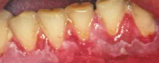
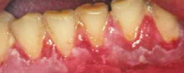 ||||^|
- 上皮上下都裂
- 不太會有角化 → 紅斑
- Basal cell hydropic degeneration 裂開 → 海綿狀囊泡
- 輕、中度表淺真皮 Lymphocyte 浸潤
- Satellite cell 壞死


| EM minor|| ^| 只有皮膚，雙側對稱 |
- 四肢末端上有輕微的隆起、圓形的暗紅色斑塊
| Stevens-Johnson Syndrome ||
- 藥物暴露
- carbamazepine: HLA-B1502
- allopurinol: HLA-B5801
- 病變面積<10%
- flu like
- 扁平紅斑 (軀幹開始) →
- 皮膚瀰漫性脫落(diffuse sloughing), 鬆弛性大皰 (flaccid bullae)
- Nikolsky sign(+)
- 所有黏膜病變
 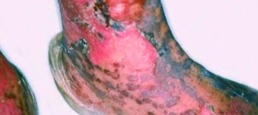 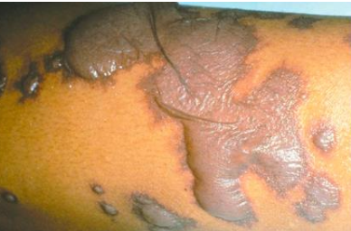
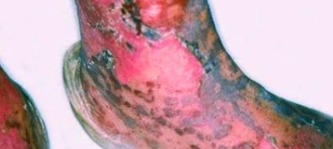 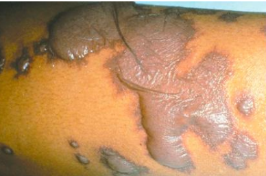 ||||^|
- 上皮下裂
- basal keratinocytes 退化、壞死
- 慢性發炎細胞稀疏

| Toxic Epidermal Necrolysis ||^| 60y ↑ |
- Stevens-Johnson Syndrome，病變面積>30%
Lupus Erythematosus (LE) 紅斑性狼瘡
-
B lymphocyte ↑，T lymphocyte 功能不正常
- typeIII 過敏 ， 抗體打抗體
-
女性多
-
血檢
- ANAs+
- Sm antibody+ (30%，高特異)
- dsDNA antibody+
|名稱||GLA|特徵 |||
|-|-|-|-|-|-|-|-|
| 系統性紅斑狼瘡 (SLE) || 31y |
- 蝴蝶斑
- 太陽照射更嚴重
- 腎衰竭 (40-50%)
- pericarditis
- 狼瘡性唇炎 lupus cheilitis
- 口腔(5-25%): 硬顎、頰黏膜和 牙齦


| Chronic cutaneous (CCLE) || 侷限在皮膚、黏膜表面|
- 口腔、皮膚病變同時發生。
- 皮膚: 圓盤狀紅斑，光敏性，有疤痕
- 口腔: 中心萎縮、潰瘍 → 白色放射紋路
 |
|| Subacute cutaneous (SCLE) ||-|
- SLE, CCLE 之間
- 光敏性皮膚病灶，無疤痕
- 口腔類似 CCLE
 |
|
組織
-
慢性發炎浸潤
-
Basal layer 退化
-
Basal membrane IgM、IgG 或 C3 沈積
-
皮膚
- 上皮
- 萎縮且扁平，偶有 acanthosis
- Basal membrane 增厚
- PAS 染色證明
- 上皮


- 口腔
- 過度角化 → 白線
- Basal membrane 斑塊 (PAS +)
- 上皮下、深層血管周圍淋巴細胞浸潤
 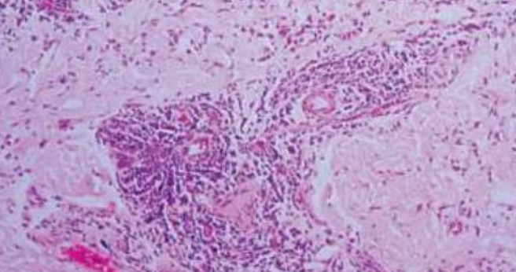
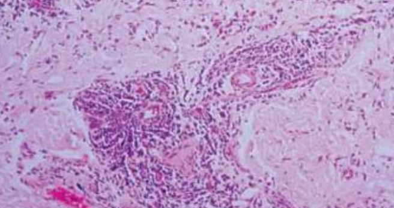牛皮癬皮膚炎
Psoriasiform Dermatitis
|名稱|| 成因 |GLA|特徵 |||
|-|-|-|-|-|-|-|-|
| Psoriasis
牛皮癬||
GENE: PSORS1 (HLA-Cw6 的等位基因)- Type IV 過敏: TH17打 keratinocyte
- 夏季改善，冬季惡化
- 紅底，銀灰皮削，無症狀(少數乾癢)
- 關節炎(10%)，影響 TMJ
- 牙周病略為關

|||||
- hyperkeratosis, Rete ridge 延長
- 角蛋白(parakeratin)異常 → 角蛋白層 neutrophil 聚集


| Erythema Migrans良
游移性紅斑，地圖舌 || 都沒啥相關 |多到少:
- 舌背前 2/3
- buccal, labial mucosa
- 軟顎或口底
- 紅色: 絲狀乳頭去角化
- psoriasis 組織特徵
- 血檢
- == HLA-Cw6 ==
- 部分學者認為牛皮蘚、乾蘚最常見的症狀就是地圖舌
| Reactive Arthritis (RA)
反應性關節炎 || 可能有免疫介導| -|
- 細菌性痢疾 (沙眼衣原體 Chlamydia trachomatis )的繼發疾病
- 皮膚黏膜表現: 非淋病性尿道炎 + 結膜炎 + 關節炎
- 環狀龜頭炎
- HLA-B27+
- psoriasis 組織特徵
 |
|
Collagen and Elastic Tissue
|名稱|| 成因 |GLA|特徵 |||
|-|-|-|-|-|-|-|-|
|Ehlers-Danlos Syndrome || 體顯性 (80%)
Type V collagen
GENE: COL5A1, COL5A2 |-|
Classical type
- 表皮彈性過高(Hyperelasticity of the skin)
- papyraceous scarring(薄如紙的瘢痕組織)
- 牙齒: 畸形、大Pulp stone, 牙根牙釉質發育不全
|||||
Hypermobility type
- 關節度變大
- Scar 不明顯
|||||
Vascular/ ecchymotic type
- Collagen III 異常
- 瘀血, 動脈瘤
|||||
type VIII罕
- 較早的牙周病,基因為 C1R and C1S
Marfan’s syndrome ||
GENE: FBN1 (fibrillin-1，肌原纖維，影響 Collagen) | - |- 長四肢、大手掌、長手指
- Gorlin sign: 舌頭碰鼻尖
- 鷄胸症(pectus carinatum): 胸骨突出
- 漏斗胸(pectus excavatum): 胸骨後突
- 背部綫條筆直
- 二尖瓣脫垂(mitral valve prolapse)
- 動脈瘤(aneurysm)
- 必須給予術前抗生素
| Tuberous Sclerosis
(結節型硬化症， Epilolianuria) || 體顯性，
GENE: TSC1, TSC2 | -| - 緻密的纖維結締組織增生
- 下顎 radiolucent lesion
- 血管纖維瘤(angiofibroma): 鼻翼, 指甲旁

- 結締組織錯構瘤
- Shagreen patches
- Ash-leaf spots: Ash-leaf spots
- CNS: radiopaque lesion, potato like 增生

- 血管平滑肌脂肪瘤良 (angiomyolipoma): 腎臟，雙側
- CNS: 癲癇(70%), 智能障礙(30%)
- 心臟橫紋肌瘤良 (cardiac rhabdomyoma)
|||||
- enamel pitting: 恆齒前牙
- 多發性的纖維丘疹(Multiple fibrous papules)
 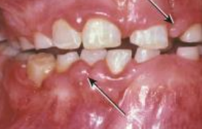
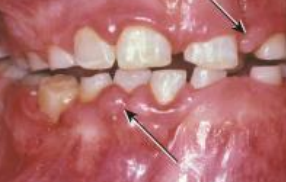 |Proteus syndrome ||
GENE: AKT1 (PKB related) | - |- sporadic(散發性,非遺傳性)
- 骨骼異常增大
- 巨頭、巨指、長骨過度生長
- 脊柱側彎(scoliosis)
- 顱外骨疣(cranial exostoses): 外耳、鼻樑、alveolar ridge
- moccasin foot: 足部軟組織過度生長
- 龐狀表皮痣(verrucous epidermal nevi)
- 皮下病變
- 脂肪瘤, 血管瘤, 淋巴管瘤
- 皮下和深部軟組織錯搆瘤
- 血管異常
- 多發性鮮紅斑痣(multiple port wine stains)
- 靜脈曲張(varicose veins)

特發性結締組織疾病
Idiopathic Connective Tissue Disorders
|名稱|| 成因 |GLA|特徵 |||
|-|-|-|-|-|-|-|-|
| Systemic Sclerosis
全身性硬化 || M2 macrophage 相關 | 成年 |
- Raynaud phenomenon(雷諾現象): 情緒困擾、寒冷暴露 → 血管收縮
- Claw-like finger(爪狀指): 末端指骨吸收、屈曲攣縮 → 手指變短
- 指尖潰瘍
- 皮膚: 瀰漫堅硬、光滑
- 鼻翼萎縮，老鼠臉

|||||
- 小口症 (Microstomia)
- 口乾症 (xerostomia), Sjogren syndrome 可能伴隨
- 所有 PDL 增寬
- 骨吸收
|||||
- 檢測 anti-Scl 70 (topoisomerase I)
- vessel 阻塞，Dense collagen 堆積
| localized scleroderma || 類似 Systemic Sclerosis， 但指影響一塊局部皮膚，無後遺症 |
| CREST Syndrome || 一種 Scleroderma 變形 | 50-60y |
- Calcinosis cutis (皮膚鈣質沉著症)
- 多發，可移動，不軟
- Raynaud phenomenon(雷諾現象)
- Esophageal dysfunction(食道功能異常)
- Sclerodactyly (皮硬化)
- Telangiectasias (毛細血管擴張)
- 臉部皮膚、朱紅區
- 可能大量出血
缺鐵性貧血相關病症
- MCV/RBC
- 缺鐵性貧血: >16
- 地中海型貧血: <13
- 口腔灼熱感、口角炎(angular cheilitis)
- 廣泛性口腔黏膜萎縮(generalized oral mucosal atrophy)
- 萎縮性舌炎(atrophic glossitis): 一片光滑
|名稱|| 成因 |GLA|特徵 |||
|-|-|-|-|-|-|-|-|
| Hereditary Hemorrhagic Telangiectasia (遺傳性出血性微血管擴張症，HHT，Weber syndrome)|| 體顯性，GENE
- HHT1: endoglin (ENG)
- HHT2: activin receptor-like kinase (ALK1; ACVRL1)
- HHT + juvenile polyposis: MADH4
- 流鼻血(epistaxis)而被診斷
- 口鼻黏膜紅色丘疹，壓迫變白
- 萎縮性舌炎
- 腸道易出血 → 慢性缺鐵性貧血
- 動靜脈廔(arteriovenous fistulas)
- 牙周血管畸形 → 菌血 → 化膿性肺栓塞
| Plummer-Vinson syndrom罕 || -| 30-50y |
- 癌前變化 → SCC
- 食道蹼(esophageal webs) → sideropenic dysphagia(缺鐵性吞嚥困難)
- 萎縮性舌炎
- 匙狀指甲(koilonychia)
 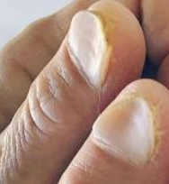
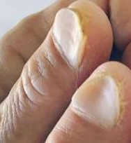 退化性、代謝性疾病
Degenerative and Metabolic Diseases
|名稱|| 成因 |GLA|特徵 |||
|-|-|-|-|-|-|-|-|
| Acanthosis Nigricans
黑色棘皮層增厚病 | 良性|
- 胰島素阻抗有關
- 可能遺傳性、內分泌、藥物相關
|^| 惡性 |
- 差異: 皮膚彎曲區域出現細小乳頭
- 口內特徵 (主要在惡性)
- 瀰漫性的黏膜改變，呈現細乳頭狀
- 內臟惡性腫瘤
 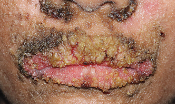
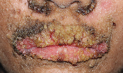|^|
- Oral: Acanthosis 多 ， Melanin 少
- Dermin: Acanthosis 少， Melanin 多
| Xanthelasma
黃斑瘤 | 血脂升高 | 中老年，眼周圍|
- 軟，黃
- 動脈粥樣硬化(atherosclerosis) risk ↑
- 最常見的皮膚黃瘤
- superficial 至 mid-dermal 存在 xanthoma cell
 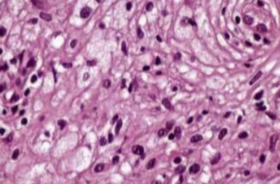
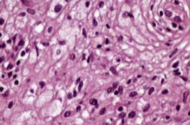血管疾病
Vascular Diseases
|名稱|| 成因 |GLA|特徵 |||
|-|-|-|-|-|-|-|-|
| Behçet Syndrome ||
- neutrophilic hyperactivity → 系統性血管炎
- HLA-B51
- 口腔: 口瘡性潰瘍(aphthous ulcerations)， 周圍有較大的瀰漫性紅斑區
- 皮膚:
- pathergy test + (皮下生理食鹽水注射試)
- 結核菌素樣皮膚反應
- 眼部:
- 男性更常見
- 發炎 → 白內障(cataracts)、青光眼(glaucoma)、視網膜的新生血管
- 即使治療，25%仍會失明
- 關節炎，但不變形
- 生殖器
- 男性: 90%涉及陰囊
- 女性: 於外陰、陰道或子宮頸
- 流疤，復發低


|||||
- 白細胞破碎性血管炎(leukocytoclastic vasculitis)，非獨有
- 嗜中性球的壁內浸潤(intramural invasion)、嗜中性球核破裂(karyorrhexis)、紅血球外滲和血管壁纖維蛋白樣壞死(fibrinoid necrosis)
| MAGIC syndrome || Behçet syndrome 變形。多發性的口腔與生殖器潰瘍，間質性的軟骨炎
(Mouth and Genital Ulcers with Inflamed Cartilage Syndrome )
| Aphthous Ulcer
口瘡性潰瘍 || CD8+ T cell 破壞上皮 | 30y↓， 非角化上皮 |
- 40% 患者有家族史
- 中間黃，外紅暈
- Minor type
- 最常見，80%
- buccal and labial mucosae
- φ: 3-10mm
- 7-14d 癒合
- 熱癢痛， 7-14 天消失
- Major type
- 較深
- φ: 1-3 cm
- 2-6w 癒合
- Herpetiform
- 多發，且頻繁復發的 Minor
| Kawasaki Disease
川崎氏病 ||-|10y↓亞裔 |
- 雙側眼球結膜炎
- 頸部淋巴結腫大
- 皮膚:
- 手掌和腳底紅斑、水腫、指甲周圍脫屑
- 多形性瀰漫性斑丘疹
- 口腔:
- 草莓舌
- 嘴唇乾裂
- 咽部紅斑
- 有冠狀動脈擴張或動脈瘤 (15-25%，致命)
其他
- X隱性
- 外胚層發育不良
- Dyskeratosis Congenita
- X顯性
- Incontinentia Pigmenti (色素失調病，Bloch-Sulzberger syndrome )
- NEMO
- Incontinentia Pigmenti (色素失調病，Bloch-Sulzberger syndrome )
- 舌背白斑
- Lichen planus
- Pachyonychia Congenita
- Dyskeratosis congenita
- 脫屑性牙齦炎
- MMP, LP, PV
- 易有惡性變化
- Dyskeratosis Congenita (OPMD)
- Xeroderma Pigmentosum (SCC, BCC)
- GVHD (SCC)
- Generalized Recessive Dystrophic EB (SCC)
- Plummer-Vinson syndrom (SCC)
- Peutz-Jeghers syndrome (胃腸道腺癌, 乳癌)
- Cowden Syndrome ( 乳腺癌risk)
- DNA repair 異常
- Muir-Torre Syndrome
- Keratoacanthoma
- Xeroderma Pigmentosum
指甲

舌頭
- Hairy Tongue 是絲狀乳頭過度角化，與抽菸相關。
- Fissure Tongue 是絲狀乳頭角化消失。
- Hairy Leukoplakia 較常在舌側，與其他三者不同。[EBV 感染]

天疱瘡們

裂開
- Acantholytic
- PV
- Darier Disease
牙齒 Hemidesmosomes 無 17 → MMP 口內病灶常見
| 目標 | EB | Pemphigus |
|---|---|---|
| Hemidesmosomes | ||
| Keratin 5,14 | Simplex | - |
| BP230 | - | BP |
| Collagen 17 (BP180) | Junctional | BP, LAD |
| Laminin-332 | MMP | |
| α6β5 integrin | MMP (α6) | |
| Collagen 7 (BP290) | Dystrophic, EBA | - |
| Desmosomes | ||
| Desmoglein 1,3 | - | PV, PP |
| Plakin family | - | PP |
復發性口瘡